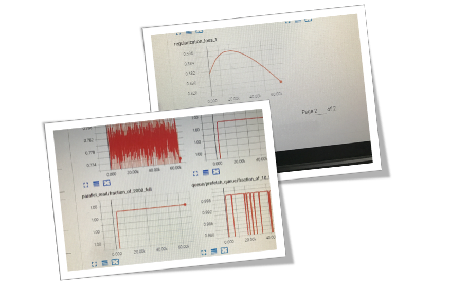
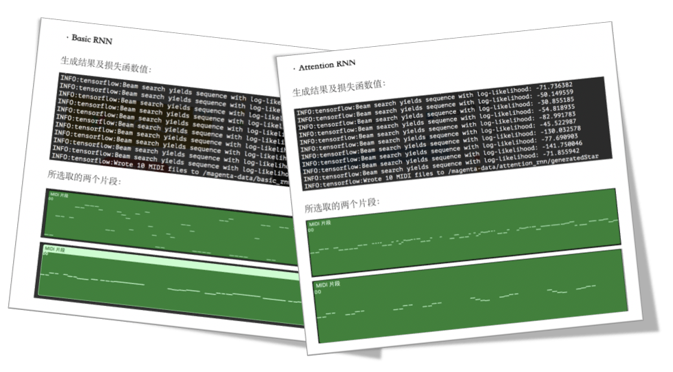
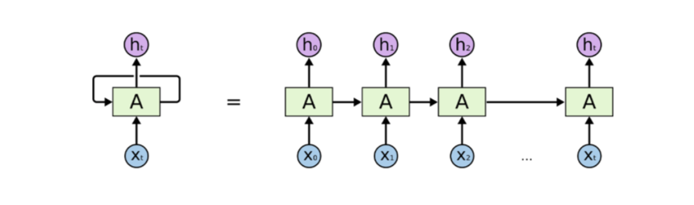

Training RNN

wThis project is based on ‘Magenta’ , an open-sourced tool for machine learning in the creative process, developed by Google Brain. We tend to use RNN to generate music in different genres.In this project, we trained models with light music, popular music and classical music. The model we used including (1) traditional LSTM; (2) LSTM with LookBack mechanism; (3) LSTM with Attention mechanism. (You can find pieces of music we generated in the result section.
Inspired by the idea of style transfer in images, we hope to extract features in different genres of music and generate music by using several given notes as primer. We choose Recurrent Neural Network (RNN) as the basis of our model, as is suitable for extracting features in time sequence.
The right side chart shows our basic work flow.We use every note as an input vector. The note is featured by its start time(Note-on), end time(Note-off), The next occurrence time(Time-shift),pitch and velocity and constructed into a 1416-dimensional vector after onehot encoding
We did the evaluations and comparison of three different RNN models. Here show s the results:

Training set preparation training rnn models with Tensorflow Model comparison and evaluationMade poster for demonstration
This project was done under the guidance of prof. Jianmin Li(Computer Science and Technology Department , Tsinghua University)